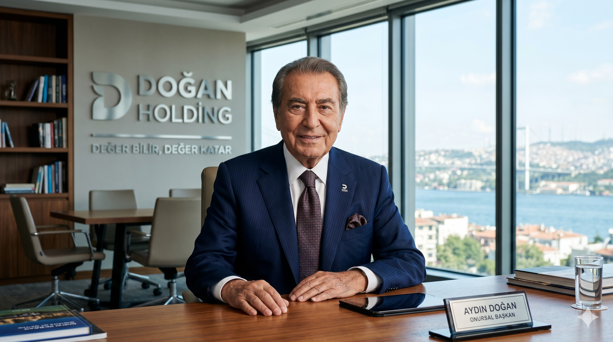

1959'dan bugüne uzanan köklü bir başarı ve güven hikayesi. Türkiye için üretiyor, geleceğe değer katıyoruz.

Onursal Başkanımız Aydın Doğan tarafından 1959 yılında temelleri atılan Grubumuz, 1980 yılında Doğan Holding çatısı altında birleşerek kurumsallaşma yolunda büyük bir adım atmıştır. Bugün, sanayi, enerji, finans, otomotiv ve teknoloji başta olmak üzere stratejik öneme sahip birçok alanda değer yaratmaya devam ediyoruz.
Kilometre taşlarımız ve başarı yolculuğumuz
Kurucumuz Aydın Doğan, ilk şirketini kurarak sanayi ve ticaret hayatına adım attı.
Grup şirketleri, stratejik bir kararla Doğan Holding çatısı altında birleştirildi.
Doğan Holding halka arz edilerek Borsa İstanbul'da (BİST) işlem görmeye başladı.
Yenilenebilir enerji ve teknoloji odaklı global vizyonla yatırımlarına devam etmektedir.
Faaliyet gösterdiğimiz her sektörde yenilikçi, sürdürülebilir ve öncü projelere imza atarak küresel ölçekte örnek gösterilen bir yatırım grubu olmak.
Şeffaflık, güvenilirlik ve toplumsal sorumluluk ilkelerimizden taviz vermeden, tüm paydaşlarımıza ve ülkemize en yüksek katma değeri sağlamak.
Girişimcilik, yenilikçilik, çevreye saygı, insana yatırım ve sürdürülebilir büyüme kurumsal kültürümüzün temel taşlarıdır.
Sürekli gelişimi hedefliyor, teknolojik dönüşüme öncülük ediyoruz. Hata yapmaktan korkmayan, inovatif düşünceyi destekleyen bir çalışma ortamı sunuyoruz.
En büyük sermayemiz insan kaynağımızdır. Adil, kapsayıcı ve fırsat eşitliğine dayalı yaklaşımımızla yetenekleri destekliyor, birlikte büyüyoruz.
Geleceği vizyoner bir bakış açısıyla yönetiyoruz.
Yönetim Kurulu Başkanı
CEO & İcra Kurulu Başkanı
CFO (Finans Direktörü)
2026 Great Place to Work Enstitüsü
2026 Sürdürülebilirlik Akademisi
En Yüksek Puan Alan İlk 10 Şirket